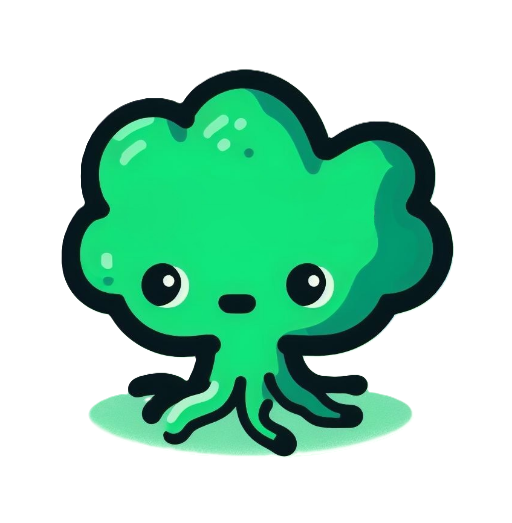

Neuro Symbolic AI Integration
Principal Investigator: Dr. Woodard
Institution and Department: University of Florida, Department of Computer & Information Science & Engineering
Duration: May 2021 - Present
Research Focus: This project aims to fuse symbolic reasoning with neural network methodologies to create more explainable AI frameworks, particularly within the field of machine learning.
Project Responsibilities: As part of this project, I am engaged in developing algorithms, conducting experiments, and analyzing data to uncover patterns that enhance the robustness and transparency of AI systems.
Additional Context: This research is part of a broader effort to push the boundaries of AI and machine learning, particularly focusing on bridging the gap between high-level symbolic reasoning and low-level neural computation.